Introduction
Imbue Network is a decentralised crowdfunding DAO and a market place for freelancers built on top of the Polkadot blockchain platform. It is an idea incubator open to the entire world that allows anyone, from any walk of life and for any kind of endeavour, to submit and vote on Ideas worth funding from the communities that believe in them the most. Imbue-fronted app is a web application that allows users to interact with the Imbue Network blockchain. It is built using React,NEXT.js,Polkadot.js, and other related technologies.
How to use this guide
This book can be used as a guide for the following things
-
Documentation: This guide could be used as one stop documentation for everything related to imbue network, both technical and non-technical. This will show all the components involved in our imbue network and how you can be part of the community from both tehnical and non-technical perspective
-
Tutorials: It can be used to utilise or create step-by-step tutorials and guides on various topics involved in imbue ecosystem. For example, you can create a guide on how to use a particular flow to showcase to the community or the users in an easier way, how to perform a certain task, or how to learn a new skill.
Components
Imbue network has primarily following components
- Frontend
- Middle layer
- Pallets(part of our imbue chain and makes it modular)
- Storage layer
Frontend
In this section, we will explain why/what/how about Imbue Network both tech and non-tech aspects
Technical overview of Frontend Components
This part will cover the frontend app(also called as dApps) of imbue network and how you can play around with it and use it in technical aspect. We also have a non-technical overview of the frontend here.
Installation
Local deployment quickstart with docker-compose
We make sure that the app is easy to deploy locally. To do so, we have created a docker-compose file that will allow you to deploy the app locally with a single command. follow these steps:
- Make sure you have docker and docker-compose installed on your computer.
- Clone the app's repository from GitHub:
git clone https://github.com/ImbueNetwork/imbue-frontend.git. - Navigate to the app's directory:
cd imbue-frontend. - Run the docker-compose command:
docker-compose up -d. - We are using make file for quick setup of db and migrations.
- Run the make command:
make db_upandmake seed. It will create the database and run the migrations to populate the table with some dummy data. - Install the app's dependencies:
yarn.
Configuration
The app's configuration is stored in environment variables. The following variables are available:
PORT: The port number to use for the app's server.IMBUE_NETWORK_WEBSOCK_ADDR: The address of the Imbue Network websocket endpoint.RELAY_CHAIN_WEBSOCK_ADDR: The address of the Polkadot websocket endpoint.DB_HOST: The host address of the database.DB_PORT: The port number of the database.DB_USER: The username of the database.DB_PASSWORD: The password of the database.DB_NAME: The name of the database.
Running the app
- Start the app's development server:
yarn dev. - Open the app in a web browser:
http://localhost:3000. - You can see the app is running
To modify the app's configuration, create a .env file in the app's root directory and specify the desired values for each variable.
Login Flow
Here we will go through how you can play with your app and test it's functionalities.
-
Step 1: Go to the http://localhost:3000/ and you will see the following page. 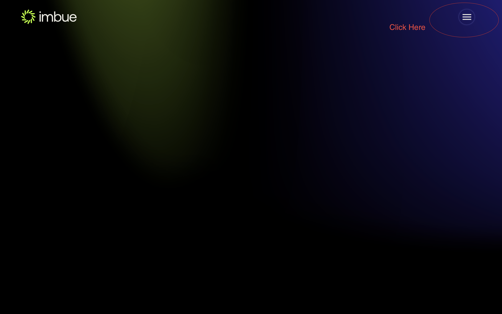
-
Step 2: click on the right-side menu as shown in the image above, and you will see the following page. here you see a lot of options, we will go over them one by one.

-
Step 3: First we have to log in and you can click in the login button. We have multiple options to signup using your email, google account or can use any supported wallet to login.
- For the login via email. Click on the signup button, enter your details and click on the create account button.
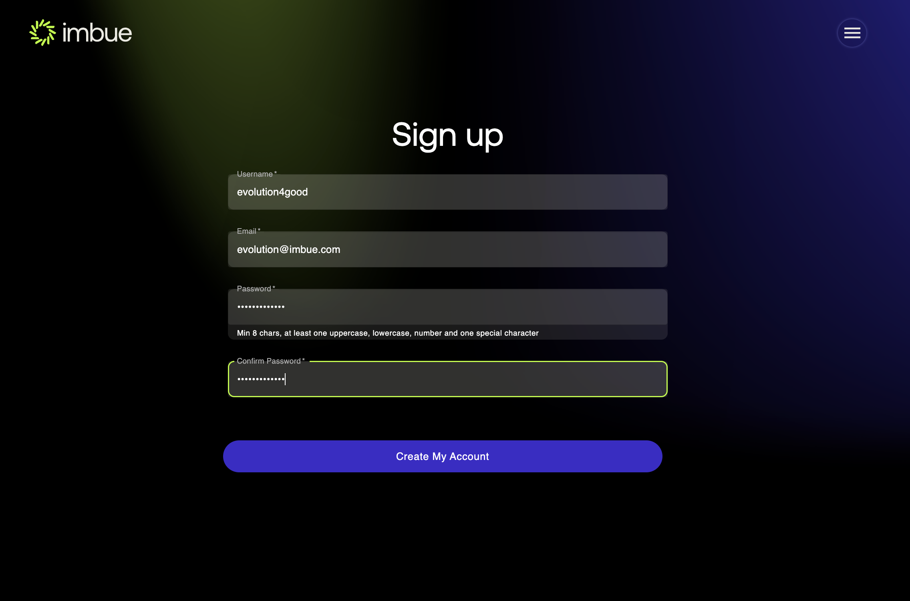
- With the Google signup you can just click on the
Sign in with Googlebutton, and it will redirect you to the Google login page, where you can enter your Google credentials and login - For the options with the wallet we can choose from different wallets as shown below
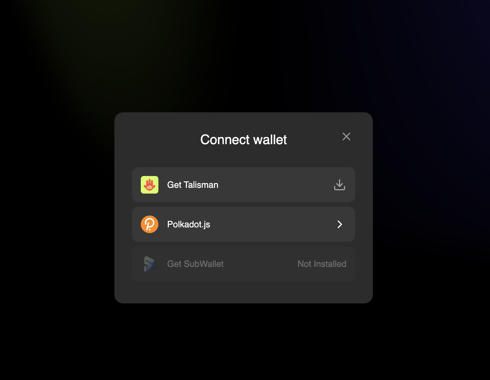
- For any of the extension wallet, you can download the extension from the chrome store and
then click on the signin with the given supported wallet. Here we will go over polkadotjs extension wallet
- For any of the extension wallet, you can download the extension from the chrome store and
then click on the signin with the given supported wallet. Here we will go over polkadotjs extension wallet
- For polkadotjs(or any substrate based wallet, here we will be showing with the polkadotjs extension), click on the signin with polkadotjs extension
you will see something like shown below which is list of accounts in your wallet, please select any one of them and signin as shown below
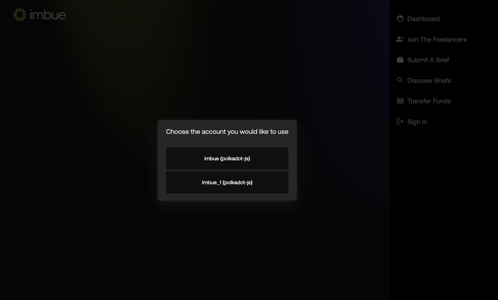
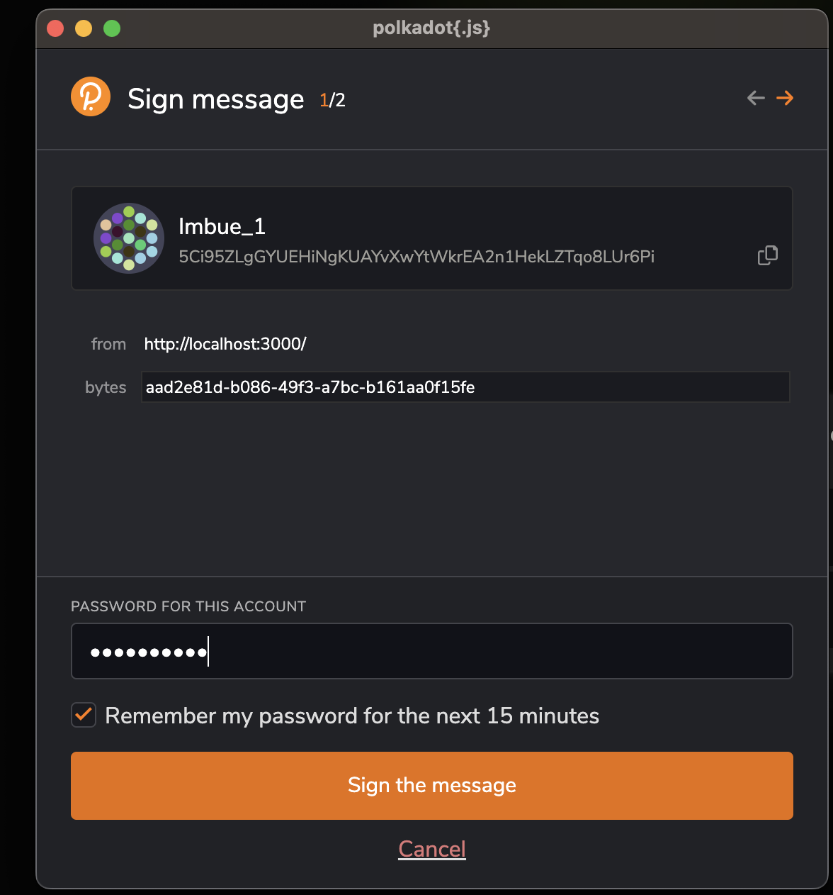
- For the login via email. Click on the signup button, enter your details and click on the create account button.
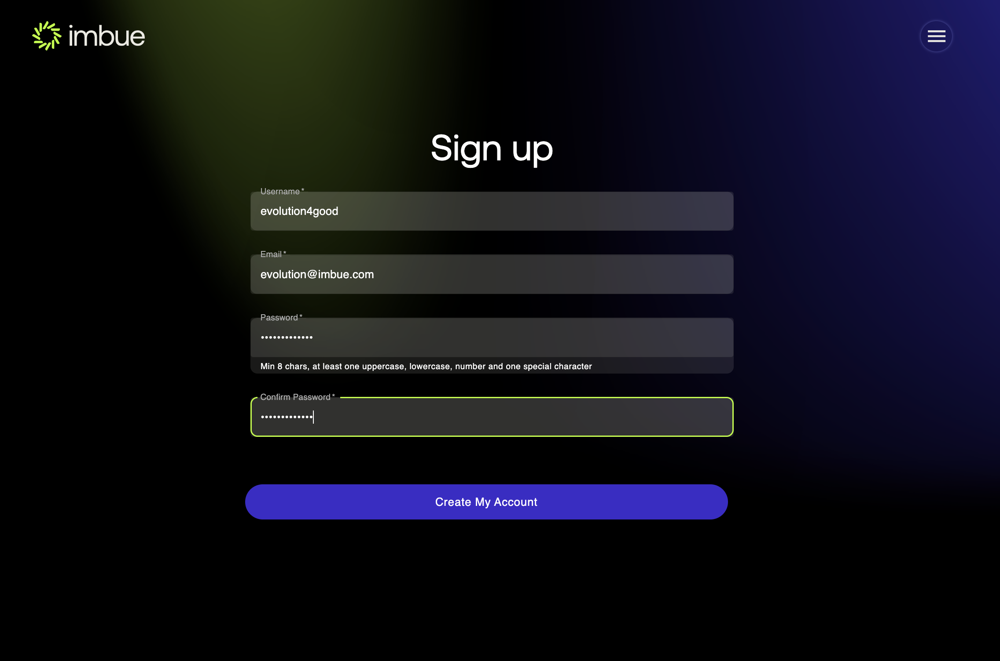
-
Step 4: Upon successful signin, you will be redirected to the dashboard page, as shown in the image below.

Brief Flow
Viewing the existing briefs
Upon successful login you will be redirected to the dashboard page, as shown in the image below.
- Step 1: From the dashboard view you either click into the freelancer view or go the menu and click the discover
briefs button, as shown below
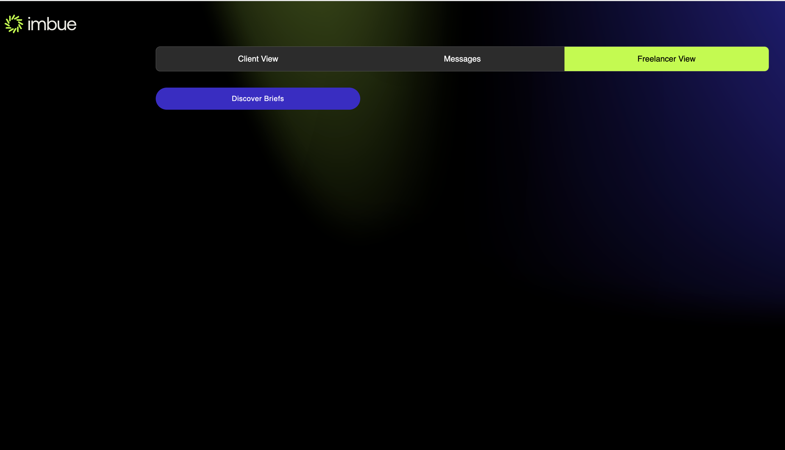

- Step 2: Once you click you can see the list of briefs as shown below

- Step 3: You can go through all the briefs can also filter through based in certain criteria and
click on the search button as shown below to apply the filters
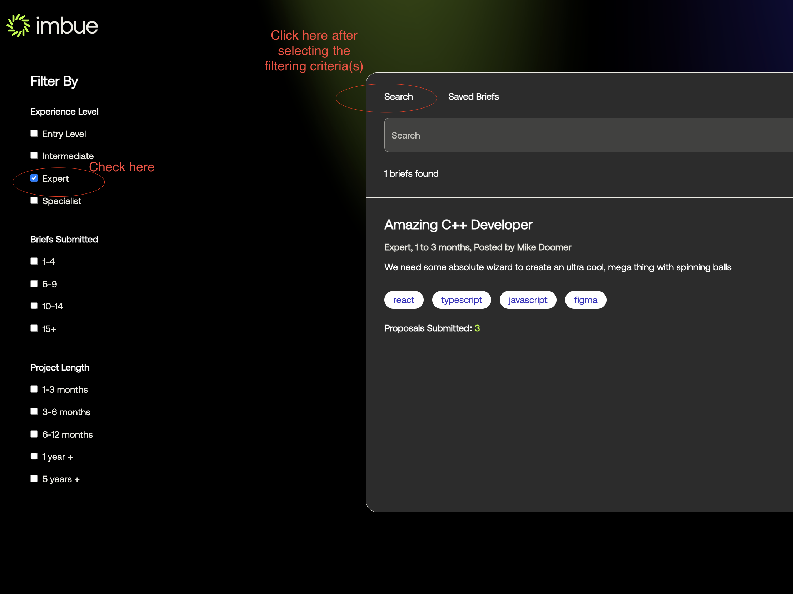
Submitting/Posting a brief
- Step 1: From the dashboard view you either click into the client view or go the menu and click the post
briefs button, as shown below

- Step 2: Now you can click either
Post a Brieffrom the Client View orSubmit a Brieffrom the main menu. You will see the below screen

- Step 3: Enter the headline and click next to enter the industry you project falls under as shown below

- Step 4: Enter the industry and click next to enter the description for your project

- Step 5: Enter the description and click next to enter the skills required for your project

- Step 6: Enter the skills and click next to enter experience level required
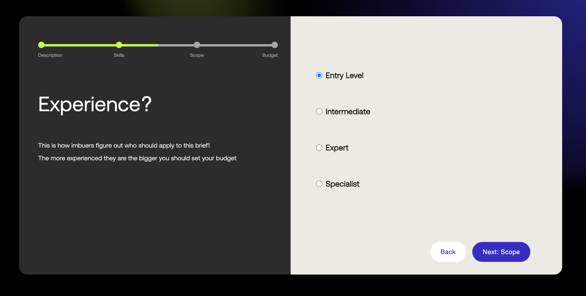 - Step 7: Enter the experience level and click next to enter the scope for your project
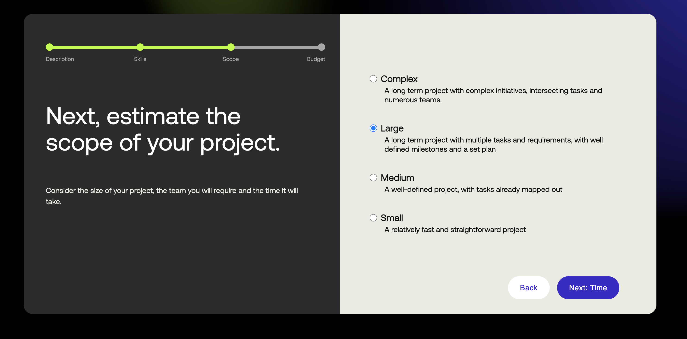 - Step 8: Enter the scope and click next to enter the estimate about how long your project will take

- Step 9: Enter the time estimate and click next to enter the budget for your project
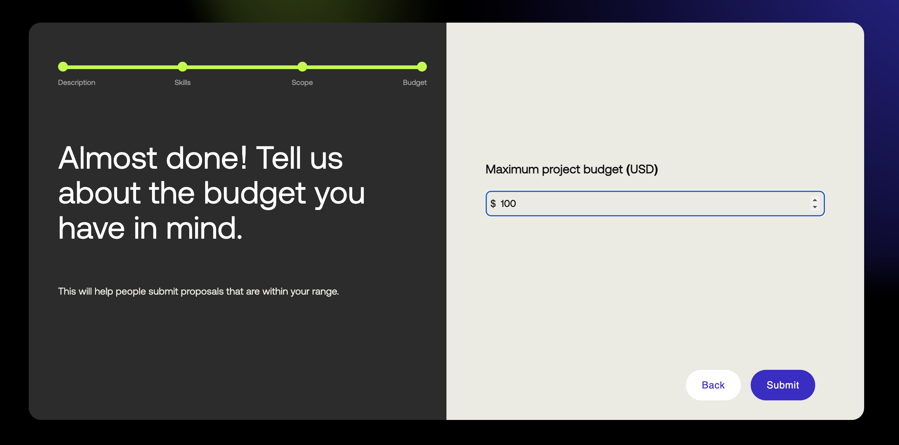 - Step 10: Enter the budget and submit and you will be shown the thank you page
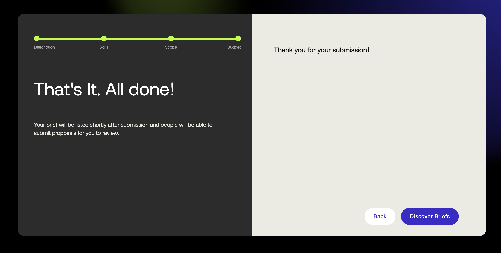 - Step 11: You can now go to the discover briefs page and see your brief listed there as shown below

Freelancer Flow
Creating the freelancer profile
Before you can submit a proposal for a brief you need to have a freelancer profile created
- Step 1: From the dashboard view go the menu and click the
Join the freelancerbutton, as shown below

- Step 2: Upon clicking you will be redirected to the freelancer profile creation getting started page as, and you can click the
Get Startedbutton. You will be asked about your skills and experience in the next pages

- Step 3: Next page after clicking
Get Startedbutton, you will be asked whether you have freelanced before as shown below

- Step 4: Select your option and click next to enter about your freelancing goals

- Step 5: Click next to enter the title for freelancing profile

- Step 6: Enter the title and click next to enter the languages you know

- Step 7: Enter the languages and click next to enter the skills you have

- Step 8: Enter the skills and click next to enter a brief bio about yourself
- Step 9: Enter the bio and click next to enter the main services you offer

- Step 10: Enter the services and click Submit, you will be shown with the Done page, and from there you can go to the Discover briefs page

Submitting a proposal for a brief
Once you have your freelancer profile set. As freelancer you can submit a proposal for a brief, and the brief creator can accept or reject your proposal
- Step 1: From the dashboard view go the menu and click the
Discover briefsbutton, as shown below
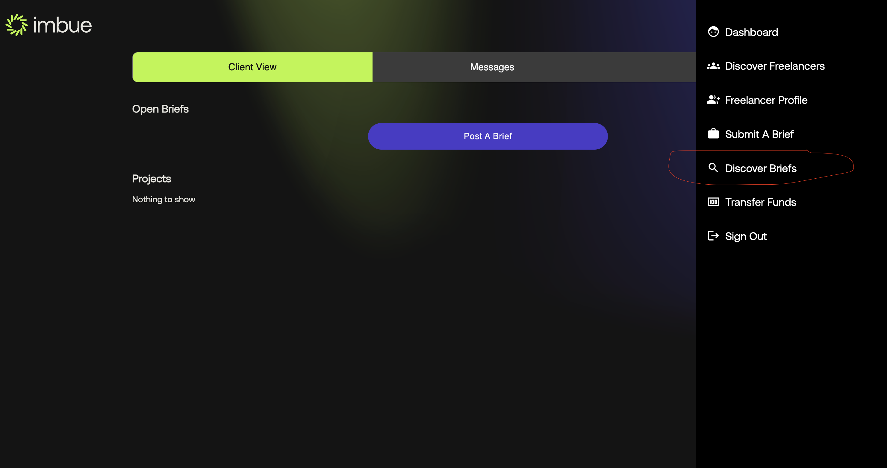 - Step 2: Upon clicking you will be redirected to the discover briefs page as shown below
- Step 3: Click on the brief you want to submit a proposal for, and you will be redirected to the brief details page as shown below
For this example we will be submitting a proposal for the brief
Evo_brief

Here in brief details page you can see the client contact history and also could find the similar project in our imbue portal - Step 4: Click on the
Submit Proposalbutton, and you will be redirected to the submit proposal page as shown below
Here you can see a lot of details in multiple sections, lets discuss each in details
First Section gives you the job description of the brief and some important details in short. You can click on theView Full Brieflink to see the full brief details
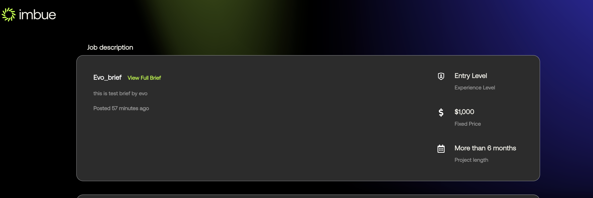
Second Section gives you the details about the milestones as shown below, here you can add more milestones(by clicking intoAdd Milestonebutton) and add amount for each milestones

Third Section gives you the details about the payment terms like the timing and the currency you will like to receive your payment in (we support multiple currency)

- Step 5: Enter all the proposal details and click submit, you will be shown that your brief is now pending with the brief owner as shown below
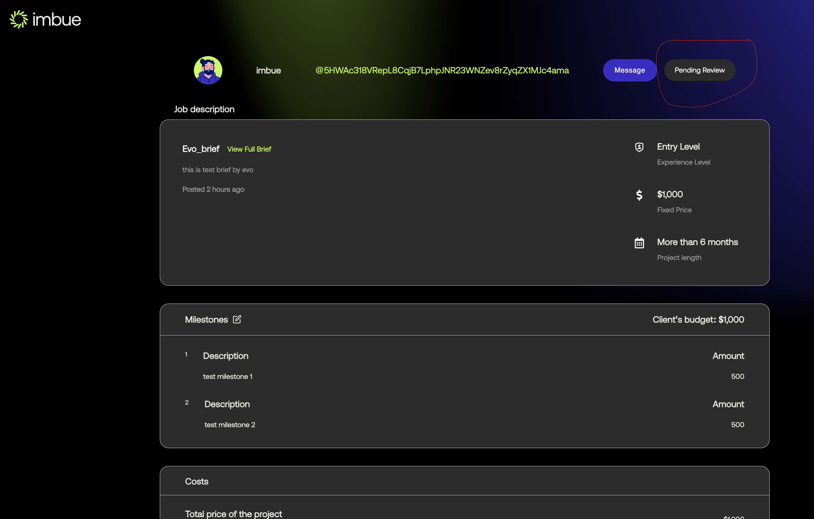
Non-Technical Started
In this section, we will explain why/what/how about Imbue Network in more non-technical aspect by going through various part of the flow